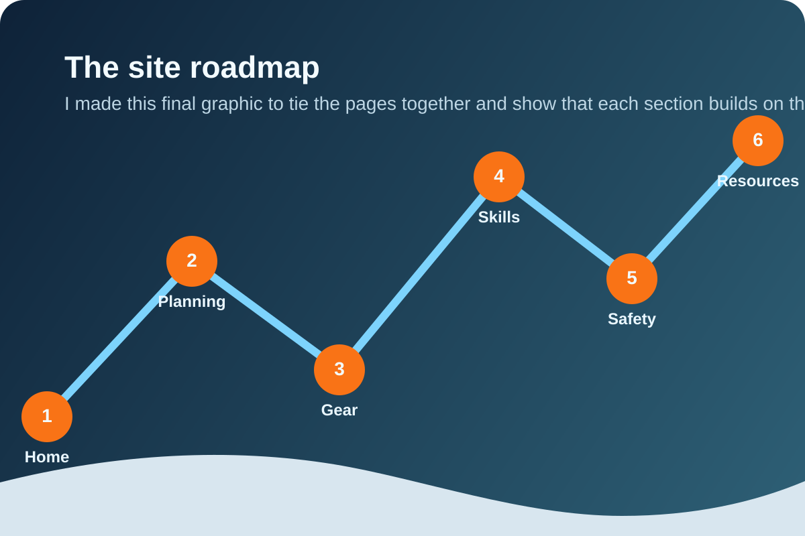

Resources
This page holds the templates, links, and next-step materials that support the rest of the site.
Community Feedback
Trailhead Discussion lives on the home page
The main discussion form is now on the front page so visitors can respond immediately. Use the links here if you want to jump back to the form or browse the public replies in GitHub.
Templates
- Trip planAdd a printable template or a shared planning document.
- Gear checklistSeparate must-have items from nice-to-have upgrades.
- Partner briefingStandardize rules, roles, emergency contacts, and vehicle plans.
Learning roadmap
- StartLow-exposure hikes, layering practice, and navigation basics.
- BuildSteeper terrain, traction transitions, and stronger planning habits.
- AdvanceMentored routes, formal instruction, and conservative objective progression.
Curated links to add next
This section is ready for your actual sources and class links.
- Weather and mountain forecastsAdd the forecast tools you trust for wind, temperature, and precipitation.
- Trail condition reportsAdd current-condition sources for ice, snow depth, and access notes.
- Navigation toolsAdd offline map apps, GPX tools, and printable map resources.
- Local organizations or classesAdd instruction providers, avalanche education, and mountain safety programs.

Multimedia checklist and source notes
- Ten images across the siteImages now appear on Home, Planning, Gear, Skills, Safety, and Resources with captions explaining why each one was included.
- One embedded audio clipThe home page includes a spoken introduction so the project has a personal voice as well as text.
- One embedded videoThe Skills page includes a mountain video because movement helps explain terrain better than a still image alone.
- Winter approach sourceI used this Commons image to open the site with a real example of snowy approach terrain.
- Mountain perspective sourceI used this Commons image to show the scale and exposure of winter mountain travel.
- Trail line sourceI used this Commons image to support the planning page's focus on route choice.
- Embedded video sourceI included this source link because the Skills page video is there to show terrain scale and movement.
- Site-made mediaThe remaining graphics and the audio clip were created for this website so the project feels more personal and easier to follow.